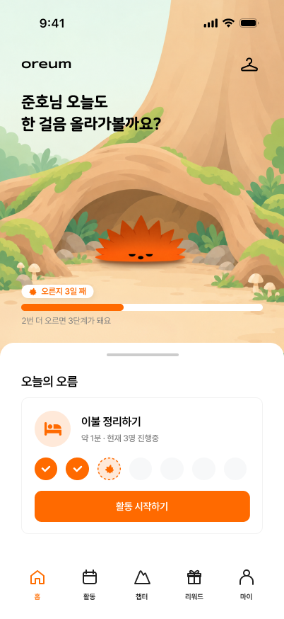
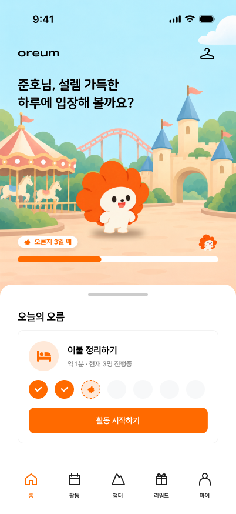
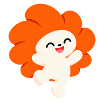
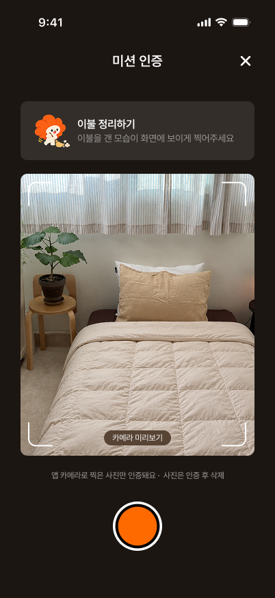
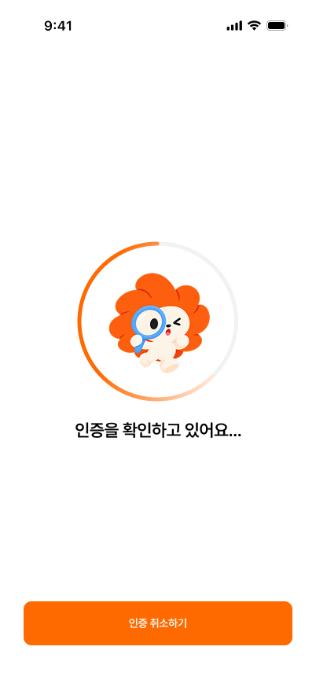
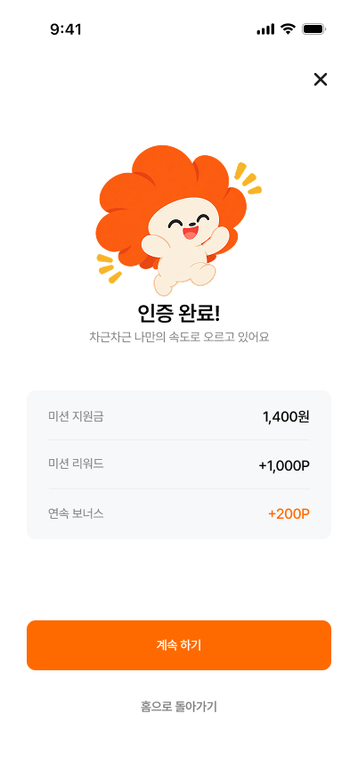

일상이 무너진 분
1시간 이상 외출한 날 주 0~1일, 누군가와 대화한 날 주 0~1일. 기상과 씻기 같은 일상부터 다시 세워요.
1단계 숨고르기부터





모두가 1단계부터 시작할 필요는 없어요. 최근 4주 동안의 외출과 대화를 기준으로 시작할 계단이 달라져요.
1시간 이상 외출한 날 주 0~1일, 누군가와 대화한 날 주 0~1일. 기상과 씻기 같은 일상부터 다시 세워요.
1단계 숨고르기부터
외출한 날 주 2~3일, 대화한 날 주 2일 이상. 일상은 유지되니 1단계는 건너뛰고 집 밖에서 시작해요.
2단계 둘러보기부터큰 계단 하나가 한 단계예요. 미션을 하나 마칠 때마다 얇은 층이 하나씩 쌓여, 다음 계단까지 이어져요.
1단계
일상의 리듬을 되찾아요
2단계
집 밖으로 한 걸음 나가요
 3단계
3단계
사람과 짧게 마주해요
지원 프로그램과 연결돼요
하루에 미션 하나. 끝내면 사진이나 위치로 인증하고, 리워드와 연속 기록이 쌓여요.




의지에 기대지 않아요. 멈춰도 다시 이어갈 수 있는 장치가 함께 있어요.
미션당 1,000원, 컨디션 좋은 날의 보너스 미션, 지원 프로그램 참여를 마치면 누적 리워드 ×2.
이어갈수록 오르미가 웅크림에서 빼꼼, 살며시, 활짝으로 자라요.
하루 쉬어도 쌓은 층은 그대로. 부활 미션과 복습으로 다시 한 층 쌓아요.
홈 화면에서 오늘의 미션을 조용히 알려줘요.
오름은 지원 프로그램을 대신하지 않아요. 그 문 앞까지 함께 가요.
[답변 미정: 기획 확정 후 입력]
[답변 미정: 개인정보 처리 방식 확정 후 입력]
쌓은 층은 그대로 남아요. 처음으로 돌아가지 않고, 부활 미션으로 다시 이어갈 수 있어요.
[답변 미정: 신청 방식 확정 후 입력]